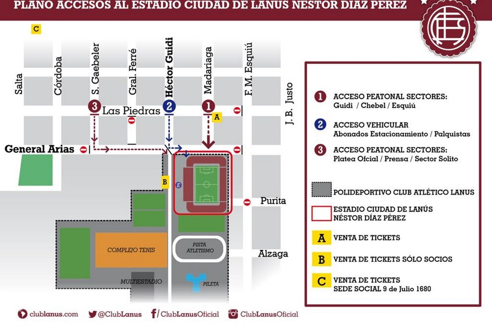

Un Clásico Imperdible
El enfrentamiento entre Lanús y River Plate siempre ha sido uno de los encuentros más esperados de la temporada. Con una gran historia de competencia, este partido promete ser un espectáculo de alto nivel. ¡Ven y sé parte de la pasión que mueve a miles de hinchas!
Detalles del Partido
- Entrenamientos previos abiertos para socios
- Zona de animación para el público
- Stands con comida y bebida
- Espectáculos en vivo antes del partido
Horarios y Accesos
El estadio abrirá sus puertas a las 15:00 horas, y el partido comenzará a las 18:00 horas. Se recomienda llegar temprano para evitar filas y disfrutar de las actividades previas.
Recomendaciones
- Llega temprano para evitar filas y garantizar tu ingreso.
- Lleva ropa cómoda y prepárate para un ambiente emocionante.
- No olvides tu carnet de socio para acceder a las áreas exclusivas.
- Sigue las indicaciones del personal del estadio para tu seguridad.
Prepárate para un evento lleno de emoción y apoyo incondicional para nuestro equipo. ¡Vamos Lanús!